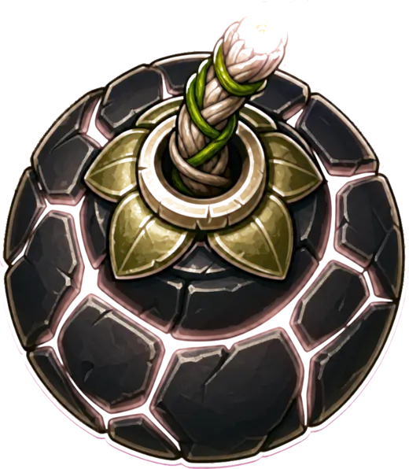

Chain na sumusunod sa landas
Sumusunod sa kurbadang landas ang isang kadena ng kulay na marbles at nagsasara ang mga puwang pagkatapos ng mga match. Kailangan ng tatlo o higit pang marbles ang isang match.
Binabantayan ng lemur king ang jungle.
Marble shooter sa maliwanag na jungle. Mag-aim, mag-match ng tatlo o higit pa, mag-trigger ng chain reaction at gumamit ng espesyal na kakayahan para mapigilan ang kadena bago ito makarating sa dulo.
May isang test level na may buong shoot-and-match loop. Hindi pa nagagawa ang campaign, level map at boss mula sa design document.

Ituro para mag-aim at i-click o i-tap para pumutok ng kasalukuyang marble. I-right-click, o i-tap ang reserba, para palitan ito ng susunod.
Kapag tatlo o higit pang marble ng iisang kulay ang nagtugma, nawawala ang mga ito. Kapag nagsara ang puwang at nakabuo ng bagong match ang dalawang dulo, susunod ang chain reaction.
Ang mga espesyal na kakayahan at board object ay tumutulong na maabot ang layunin ng level bago makarating ang kadena sa dulo ng landas.
Sumusunod sa kurbadang landas ang isang kadena ng kulay na marbles at nagsasara ang mga puwang pagkatapos ng mga match. Kailangan ng tatlo o higit pang marbles ang isang match.
Wildcard, bomb, rewind, fire, lightning, roots, freeze, water, aim, stone pierce at double shot ay naipatupad sa mga panuntunan ng laro, bawat isa ay may sariling emblem.
Nakalagay sa board ang mga field bomb at color crystal at tumutugon kapag natamaan.
Maaaring hingin ng level na linisin mo ang kadena, i-activate ang mga board object, maabot ang score o maabot ang target na cascade.
May reaction pose ang koronang lemur habang naglalaro.
May pause screen na nag-aalok ng volume ng effects, volume ng musika at setting ng aim guide.
Wala pang release date. Ito ay mga layunin ng proyekto, hindi mga pangako.
Art asset mula sa Unity project, hindi gameplay capture.



Zuma-style na marble shooter sa maliwanag na jungle. Pinapaputok ng koronang lemur king ang mga kulay na marbles sa gumagalaw na kadena. Mag-match ng tatlo o higit pa at gumamit ng espesyal na kakayahan para mapigilan ito.
Hindi pa. Ang Lyamur ay maagang prototype na may isang test level, walang public build at walang release date. Ang design document ay nakatuon sa mobile at PC.
Ginawa ang Lyamur ng WillowinWorlds, isang independent na game studio (tingnan ang pangunahing laro). Sundan ang WillowinWorlds sa mga social channel na naka-link sa pahinang ito, o mag-email sa willowinworlds@gmail.com para magtanong tungkol sa mga update ng Lyamur.
Magbubukas ang pagboto sa mga channel ng studio. Sundan ang WillowinWorlds para sumali.